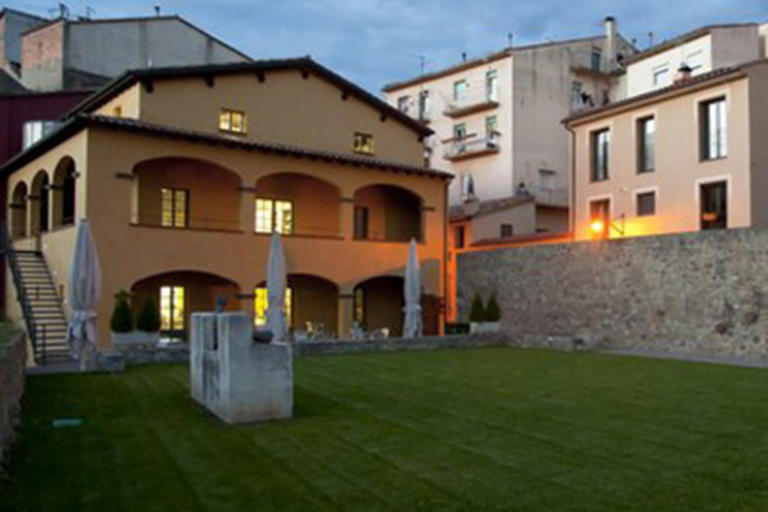

Visita · Sant Joan
El Palmàs és la casa on va néixer Jaume Nunó l'any 1824. El 1991 fou adquirida per l'Ajuntament i ha estat reconstruïda entre els anys 1996 i 2010. Es tracta d'una casa pairal, de la qual cal…